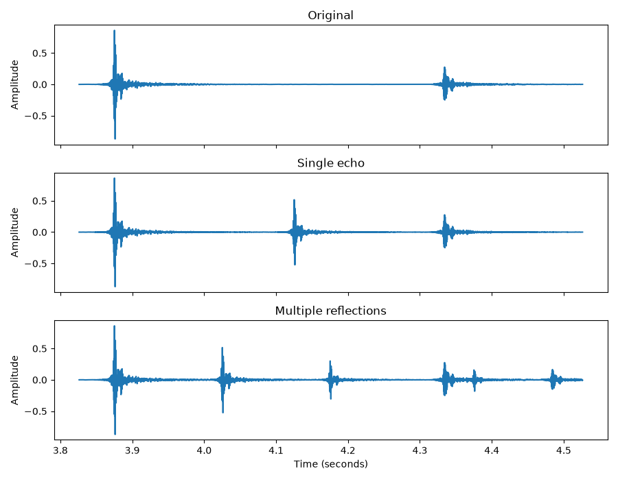
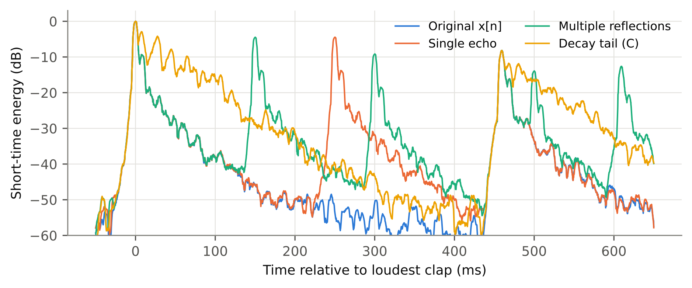
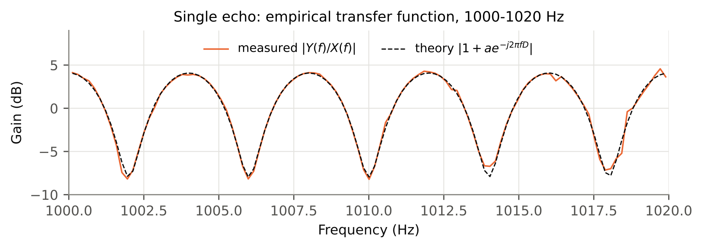
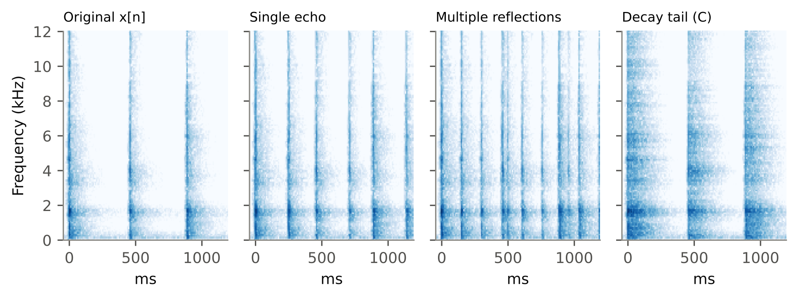
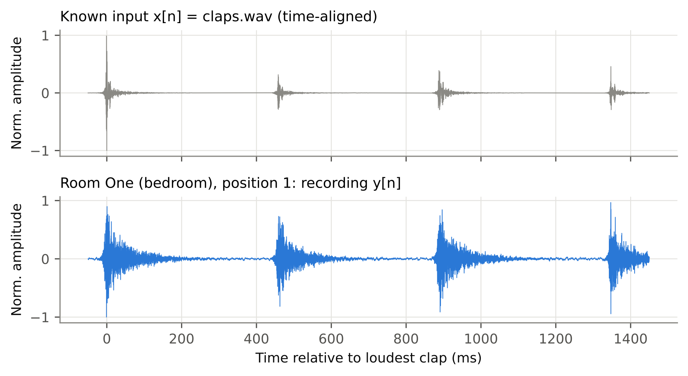
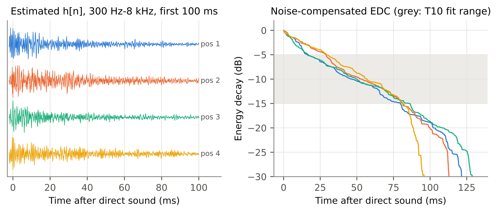
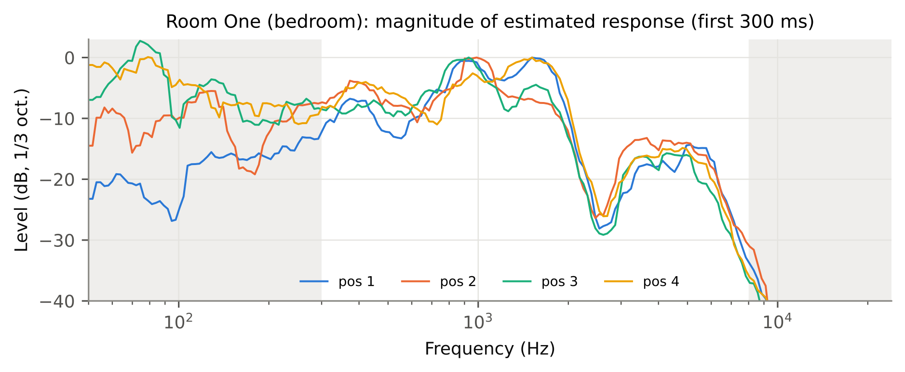
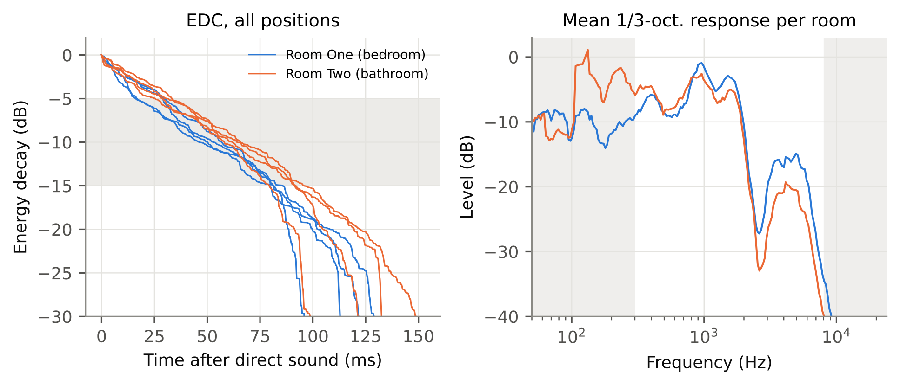

Part 3 · Progress
What we have done so far
We have a working simulation, real recordings from two rooms, a method that estimates each room's impulse response from those recordings, and a first comparison of the rooms. Along the way we ran into several problems, mostly caused by using phones as the speaker and microphone.
Task 1 · Simulating reflections by convolution done
We convolved claps.wav with three synthetic impulse responses and checked the results in both the time and frequency domains.

Time domain. Every designed echo appears where expected, and each clap gets its own set of echoes, which the output then adds together. That is linearity and time-invariance at work. All the delays (150–500 ms) are far above the ~30–50 ms echo threshold, so you hear separate repeats rather than reverberation. The third model, with millisecond reflections and a noise tail, behaves differently: its energy falls along a straight line in dB instead of showing separate bumps.


Frequency domain. A single reflection with gain \(a\) and delay \(D\) makes a comb filter, \(|H(f)| = |1 + a\,e^{-j2\pi f D}|\), that swings between +4.1 dB and −8.0 dB every \(1/D = 4\) Hz. That ripple is too fine to hear as a change in tone. On average the spectrum rises by \(10\log_{10}(1+a^2)\): we predicted 1.34 dB and 1.83 dB for the two echo models and measured 1.33 dB and 1.79 dB.

Task 2 · Measuring a real room done, needs better data
We played claps.wav from a phone in each room and recorded at four positions (setup on the data page). Because we know the input, we estimate the room impulse response by regularized deconvolution, band-limit it to 300 Hz – 8 kHz (where the phone gives usable sound), and compute the Schroeder energy-decay curve, EDT, \(T_{10}\), DRR and \(C_{50}\).



Task 3 · Comparing two rooms first pass done

| Metric | Bedroom | Bathroom | Reading |
|---|---|---|---|
| EDT | 0.32 ± 0.03 s | 0.40 ± 0.02 s | Bathroom decays more slowly at first, at every position |
| \(T_{10}\) | 0.38 ± 0.03 s | 0.38 ± 0.06 s | Same within measurement error |
| \(C_{50}\) | 9.7 ± 0.7 dB | 7.6 ± 0.6 dB | Bathroom less clear, no overlap |
| DRR | −5.0 ± 1.6 dB | −5.4 ± 2.0 dB | Similar |
The slower early decay in the bathroom fits the idea that its hard surfaces absorb little, although the later decay (\(T_{10}\)) is the same in both rooms. We expected the bedroom's soft furniture to make it sound duller at high frequencies, but we saw the opposite: the bathroom's spectrum has about 5 dB less energy above 2.4 kHz, relative to its peak. The spread between positions in the same room is almost as large, so this difference is only suggestive. One possible reason is the source: in the bathroom the phone lay face-up on the floor, so the recording phone in each corner was far off the speaker's axis, and high frequencies are the most directional. Because the rooms differ in size, contents, openings and source and recording positions all at once, we cannot attribute any difference to one factor.
Challenges and how to overcome them
| Challenge | What happened | How we can overcome it |
|---|---|---|
| A clap is not an impulse | Our input has 12 claps only 0.45 s apart, so each clap's tail runs into the next. Treating a recording as \(h[n]\) directly gave reverberation times of 3–12 s, which is meaningless. | Partly solved: deconvolve with the known input. Next: use an exponential sine sweep, which spreads energy evenly over all frequencies and separates the response cleanly. |
| The phone is not linear | Input clap levels range 0.18–1.00, but the recordings show 0.39–1.00 (bedroom) and 0.63–1.00 (bathroom). A linear system cannot squeeze levels like that, so the phone most likely applies automatic gain control or limiting. | Record with a fixed-gain app or a dedicated recorder; play the sweep at one constant level; check linearity by measuring at two playback levels and comparing. |
| The device colors everything | Every estimate is really \(h_\text{speaker} * h_\text{room} * h_\text{mic}\). A phone speaker gives almost nothing below ~300 Hz, and the same peak/dip shape appears in every position. | Done: analyze only 300 Hz – 8 kHz. Next: measure a reference with the mic very close to the speaker and divide that device response out; compare rooms only by differences, which cancel the shared device response. |
| Noisy, hand-held recordings | The noise floor is only 19–24 dB below the peak. The standard \(T_{20}\) needs about 35 dB, so we can only report EDT and \(T_{10}\). The recording phone was held by hand and not started in sync with playback, so positions cannot be repeated exactly and signals have to be aligned afterwards by their peaks. | A longer sweep puts more energy into the room; average 3+ takes per position; put the recording phone on a stand at a marked spot; add a sync click before the sweep. |
| Confounded room comparison | The rooms differ in size, materials, shape and placement, so we cannot say why the bathroom is less clear. | Run a controlled test: same room, same positions, with and without towels and blankets on the walls, changing only the material. |
| Simulation not based on a real room | The Task 1 delays and gains are illustrative, not derived from any room. | Build an image-source model from the measured room dimensions and compare its early reflections with the measured responses. |
Who did what
Yiheng Li
Simulation and DSP: synthetic impulse responses, convolution code, simulated audio.
Yongjia Xia
Recordings and experimental conditions: room selection, measurements, sketches, all eight recordings.
Yingqian Sun
Analysis and integration: time/frequency analysis, impulse-response estimation, room comparison, report.